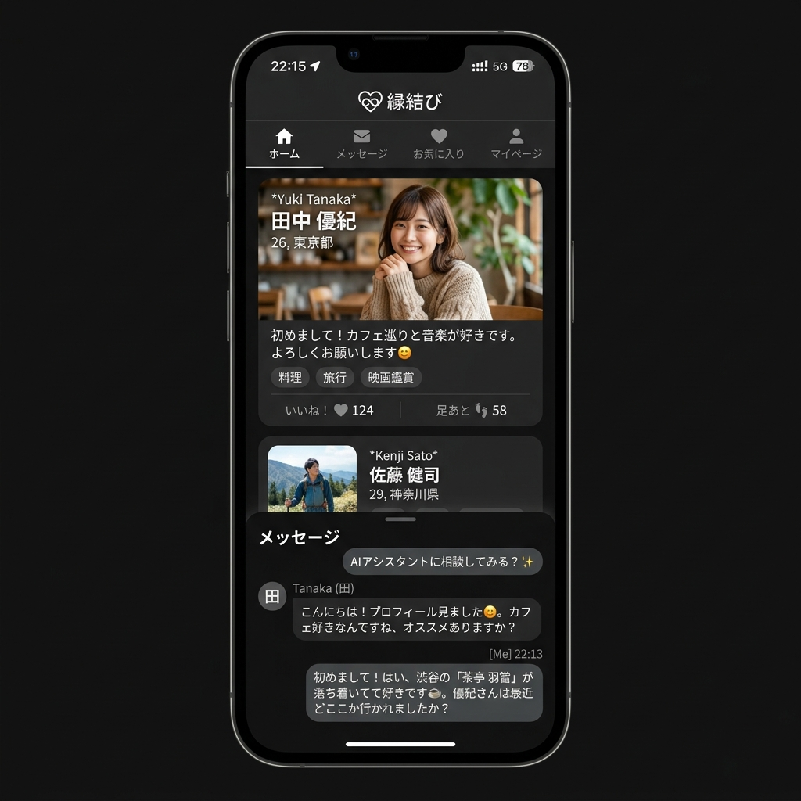
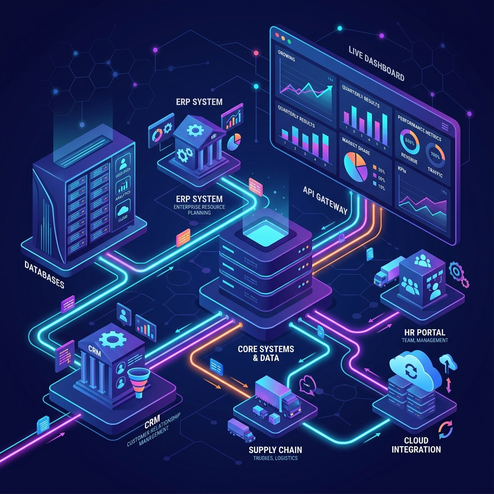
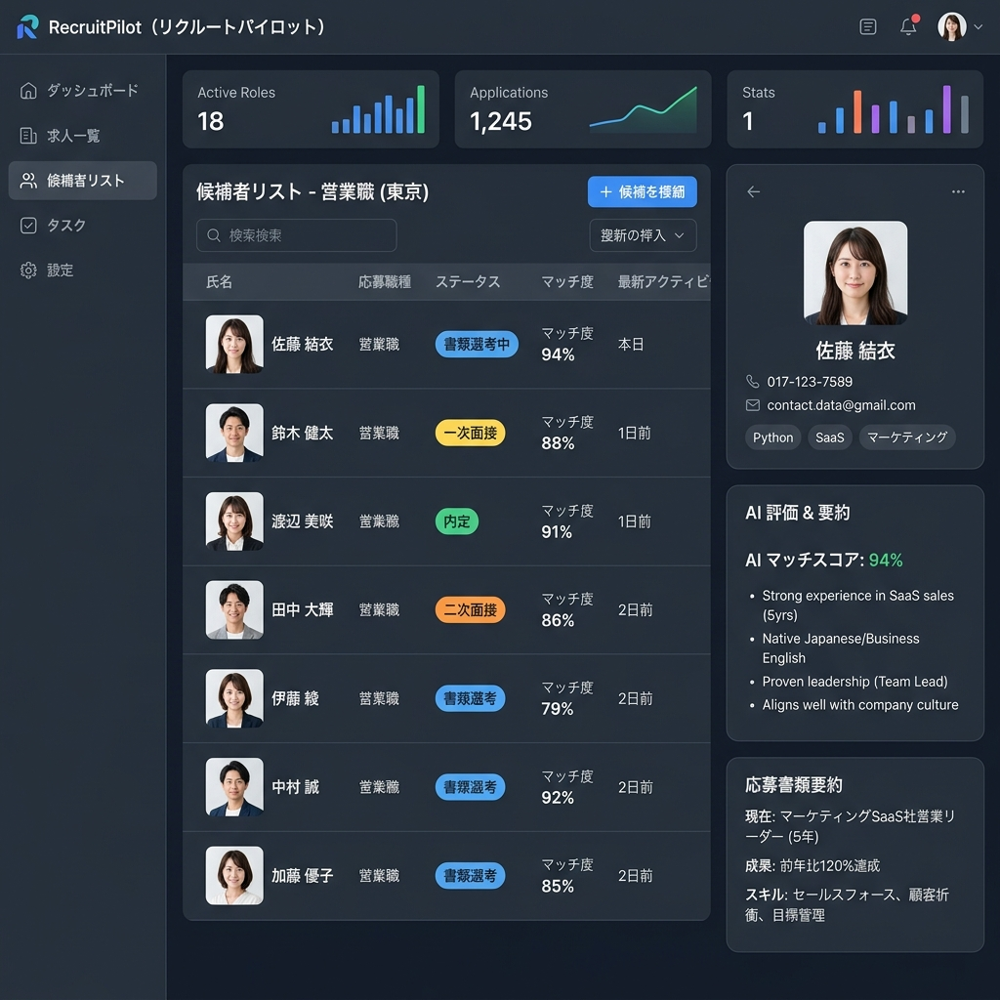

最先端の生成AI導入から、業務システム、マッチングアプリ、求人サイトまで。本質的な価値設計に基づき、事業価値を最大化するシステム開発実績。

新規事業開発新規事業としてマッチングサービスを立ち上げるにあたり、「限られた予算とスケジュールで競合と差別化する機能を作りたい」「自己紹介文の作成が面倒でユーザーが離脱してしまう」「サクラや不適切発言の検知コストが心配」という課題がありました。
仕様策定とUIモックのフェーズをミニマルに行い、着手からわずか3週間で動くプロトタイプ（MVP）を構築。検証結果をスピーディーに反映させながら、日本とベトナムのハイブリッド体制で本開発を行うことで、通常のスクラッチ受託開発に比べて費用を約半分に抑えながら安定したリリースを実現しました。

システム開発企業内の多種多様なフォーマットの機密ドキュメント（PDF、仕様書、過去の社内Slackログなど）を検索・活用したいが、通常のクラウドAIサービスを使うと情報漏洩リスクがあるほか、データベース間のAPI連携インフラが複雑化しており、開発期間とセキュリティ設計の妥協が許されない状況でした。
代表・山下のNEC系大規模データシステム構築・推進経験、および日本オラクルでのOracle Cloud Infrastructure（OCI）提案実績を結集し、クラウドインフラ設計段階から**エンタープライズ品質の超セキュア環境を保証**。既存データと連動した使いやすいRAGを短期デプロイし、社員の社内情報検索および報告書作成にかかる時間を**月間120時間以上削減**しました。

新規サービス従来の求人・求職マッチングプラットフォームでは、求人企業の募集要項の作成ハードルが高く、更新頻度が落ちることや、求職者のレジュメと求人票との手動マッチング作業に多大な人件費が発生し、スケールしづらい課題を抱えていました。
ミニマルなデータベース設計により、無駄なデータ取得や過剰なAPIコールを削減しつつ高速動作を実現。管理側のマッチング仲介・求人票チェック工数を**約85%削減**し、自社メディア型の集客を最大化させるSEO設計を盛り込むことで、リリース数ヶ月で**オーガニック登録者数増加に大きく貢献**しました。